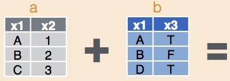

Combinar conjuntos de datos es una tarea esencial para muchos proyectos. Por ejemplo, podemos tener datos sobre la abundancia de especies, pero también un conjunto de datos de fuentes externas sobre las condiciones ambientales durante nuestras observaciones (por ejemplo, temperatura, precipitación, elevación, tipo de vegetación).

Utilizaremos el paquete dplyr, el cual tiene muchas funciones convenientes para combinar conjuntos de datos. Primero, carga el paquete:
library(dplyr)Al igual que en la página de ayuda para Subconjunto de datos, utilizaremos un conjunto de datos donde se muestrearon murciélagos en un bosque de regeneración en el sureste de Australia que ha sido adelgazado para reducir la densidad de árboles.
También leeremos un conjunto de datos que proporciona las ubicaciones geográficas de cada sitio (por ejemplo, descargado de un GPS) y los datos meteorológicos nocturnos (en este caso, descargados y resumidos de los datos en línea de la Oficina de Meteorología).
Descarga los tres conjuntos de datos de muestra (Bats_data.csv, Geo_data.csv y Weather_vars.csv) e impórtalos en R.
Bats <- read.csv(file = "Bats_data.csv")
Geo <- read.csv(file = "Geo_data.csv")
Weather <- read.csv(file = "Weather_vars.csv")dplyr tiene una función para agregar simplemente todas las columnas de un conjunto de datos (z) a otro (y):
bind_cols(y, z)Esto solo es útil si los dos conjuntos de datos tienen el mismo número de filas y las filas están ordenadas de la misma manera (simplemente empareja las filas por su posición).
En este caso, tenemos dos conjuntos de datos bastante diferentes que queremos unir a nuestro conjunto de datos principal sobre la abundancia de murciélagos. El conjunto de datos de ubicaciones geográficas se ha medido a nivel de sitio, por lo que cada sitio separado tiene una medición separada de latitud y longitud.
El segundo conjunto de datos con información meteorológica ha utilizado la misma estación meteorológica para todos los sitios, pero se ha medido para cada noche de encuesta por separado. Por lo tanto, utilizaremos la columna “Sitio” para unir el conjunto de datos “Geo” y la columna “Fecha” para unir el conjunto de datos “Weather”.
La función left_join agregará filas coincidentes de un segundo conjunto de datos al primero, especificando qué variable en el primero se utiliza para hacer la coincidencia.
Para agregar las ubicaciones geográficas al conjunto de datos de Murciélagos, utilizando la columna “Sitio” para coincidir las filas, utilizaríamos:
Bats_withGeo <- left_join(Bats, Geo, by = "Site")La parte by="Site" en realidad es opcional, y si la omites, left_join buscará columnas con el mismo nombre para usar como columna de coincidencia, y recibirás un mensaje al respecto de la función. Esto es equivalente a la línea de arriba:
Bats_withGeo <- left_join(Bats, Geo)## Joining with `by = join_by(Site)`Sin embargo, recomendamos especificar la columna de coincidencia para ser más explícitos acerca del comportamiento deseado de la coincidencia. Para agregar ahora los datos climáticos a ese nuevo conjunto de datos, utilizando la variable Fecha para coincidir filas, usaríamos:
Bats_withGeoWeather <- left_join(Bats_withGeo, Weather, by = "Date")Puedes verificar lo que ha sucedido al ver el conjunto de datos utilizando la función dim, para encontrar las dimensiones de nuestros conjuntos de datos, o colnames para ver una lista de nombres de columnas.
dim(Bats)
dim(Bats_withGeoWeather)
colnames(Bats_withGeo)
colnames(geo.weather.join)Verás que el nuevo conjunto de datos, Bats_withGeoWeather, tiene el mismo número de filas que el original, Bats, pero con cuatro columnas adicionales: “Latitud”, “Longitud”, “Temperatura_media” y “Humedad_media”.
Ese fue un ejemplo agradable y ordenado, donde todos los códigos en nuestro conjunto de datos principal (Bats) coincidían con los códigos en los conjuntos de datos en los que queríamos hacer la unión. También existen una serie de funciones que ayudan en situaciones de datos desordenados.
Vamos a simular un par de conjuntos de datos desordenados. Imagina que tienes datos de actividad de murciélagos para cinco sitios y datos de densidad de árboles para cinco sitios, pero solo dos de esos sitios (D y E) contienen mediciones para ambas variables. Esto puede ocurrir cuando utilizas conjuntos de datos recopilados por diferentes personas o con diferentes propósitos en el mismo estudio.
Bat_sim <- as.data.frame(cbind(
Site = c("A", "B", "C", "D", "E"),
Activity = c(62, 29, 30, 23, 24)
))
Tree_sim <- as.data.frame(cbind(
Site = c("D", "E", "F", "G", "H"),
Tree_density = c(525, 390, 477, 778, 817)
))## Site Activity
## 1 A 62
## 2 B 29
## 3 C 30
## 4 D 23
## 5 E 24## Site Tree_density
## 1 D 525
## 2 E 390
## 3 F 477
## 4 G 778
## 5 H 817Si queremos combinar conjuntos de datos solo para las filas donde tengamos medidas tanto de actividad de murciélagos como de densidad de árboles y no nos importa el resto de los datos, podemos usar inner_join.
Bat_withTree_inn.join <- inner_join(Bat_sim, Tree_sim, by = "Site")
print(Bat_withTree_inn.join)## Site Activity Tree_density
## 1 D 23 525
## 2 E 24 390Si estamos principalmente interesados en el conjunto de datos de murciélagos, podemos usar left_join() como se mencionó anteriormente para mantener todas las mediciones de murciélagos y agregar densidades de árboles donde las tengamos. Los datos faltantes de densidad de árboles serán NA.
Bat_withTree_left.join <- left_join(Bat_sim, Tree_sim, by = "Site")## Site Activity Tree_density
## 1 A 62 <NA>
## 2 B 29 <NA>
## 3 C 30 <NA>
## 4 D 23 525
## 5 E 24 390Por otro lado, si estamos principalmente interesados en las densidades de árboles, podemos usar right_join para mantener todos los datos de densidad de árboles e incluir la actividad de murciélagos donde la hemos medido. Los datos faltantes de murciélagos serán NA.
Bat_withTree_right.join <- right_join(Bat_sim, Tree_sim, by = "Site")## Site Activity Tree_density
## 1 D 23 525
## 2 E 24 390
## 3 F <NA> 477
## 4 G <NA> 778
## 5 H <NA> 817Alternativamente, si queremos mantener TODOS los datos y decidir más adelante qué excluir, podemos usar full_join.
Bat_withTree_full.join <- full_join(Bat_sim, Tree_sim, by = "Site")## Site Activity Tree_density
## 1 A 62 <NA>
## 2 B 29 <NA>
## 3 C 30 <NA>
## 4 D 23 525
## 5 E 24 390
## 6 F <NA> 477
## 7 G <NA> 778
## 8 H <NA> 817Finalmente, podemos consultar qué filas de nuestros datos tienen o no tienen coincidencias en otra tabla. Por ejemplo, podemos usar semi_join para imprimir solo las filas de las mediciones de murciélagos que tienen un sitio coincidente donde se midieron árboles, o usar anti_join para encontrar lo contrario, donde no se midieron árboles.
Bat_inTree <- semi_join(Bat_sim, Tree_sim, by = "Site")## Site Activity
## 1 D 23
## 2 E 24Bat_notinTree <- anti_join(Bat_sim, Tree_sim, by = "Site")## Site Activity
## 1 A 62
## 2 B 29
## 3 C 30Este tutorial se basó en la excelente Hoja de referencia de manipulación de datos con dplyr y tidyr producida por Rstudio. Las imágenes fueron obtenidas del mismo documento. Puedes utilizar ?dplyr para obtener ayuda con este paquete.
Autor: Rachel V. Blakey
Año: 2016, actualizado en 2022 por Will Cornwell
Última actualización: Jun. 2023